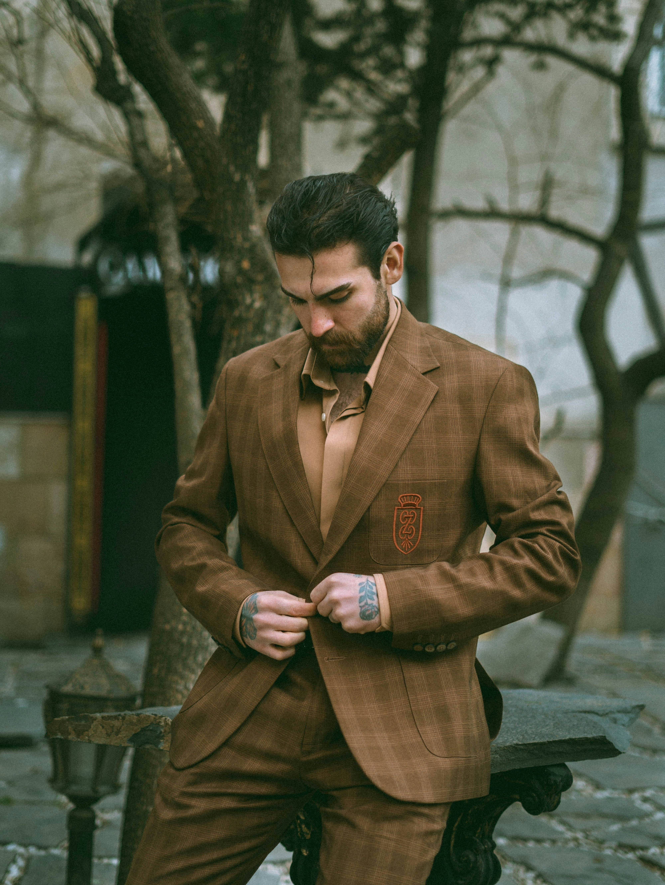

5 Tips for a Custom Flawless Fit
By Nadraht Mohammed | July 2025

Achieving a flawless custom fit is all about knowing your body, understanding fabrics, and working with a team that listens. Here are five tips to help you look your absolute best in your next tailored piece:
- Know Your Measurements: Accurate bust, waist, hip, and height measurements are the foundation of a good fit.
- Choose the Right Fabric: Pick fabrics that suit your body type and comfort needs. Breathable cottons or structured crepes are great for corporate wear.
- Fit Over Trend: Don't chase every fashion trend. Focus on what flatters your shape and style.
- Test Before You Wear: Always try it on. Move around. Sit. Raise your arms. A flawless fit allows ease and elegance.
- Work with a Trusted Tailor: Find someone who gets your style, communicates clearly, and finishes cleanly.
Looking sharp isn't just about the fabric; it's about confidence, comfort, and class.
← Back to Blog